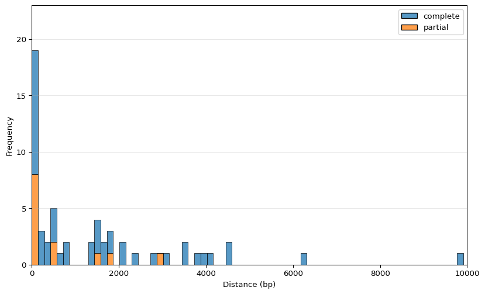
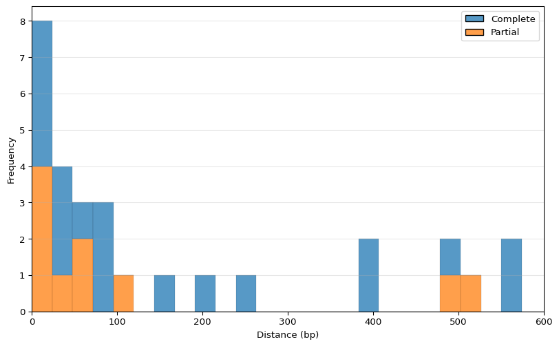

import os
os.remove("only_cds.sorted_info.bed")
with open("only_cds.sorted.bed") as cds_bed:
for cds in cds_bed:
cds = cds.strip().split('\t')
chr = cds[0]
start = cds[1]
end = cds[2]
score = cds[4]
strand = cds[-1]
if 'partial "true"' in cds[3]:
name = cds[3].split()[1][1:-2] + "_partial"
else:
name = cds[3].split()[1][1:-2]
with open("only_cds.sorted_info.bed", "a") as result:
result.write(chr+"\t"+start+"\t"+end+"\t"+name+"\t"+score+"\t"+strand+"\n")IS - CD distance
Curated each of IS in EC958 their potential effect on nearest CDS. CDS appears after an IS.
Prepare the CDS input, adding partial in the name:
# total CDS
!wc -l only_cds.sorted_info.bed
# partial CDS
!grep "_partial" only_cds.sorted_info.bed | wc -l
# percentage
167/5094 5094 only_cds.sorted_info.bed
1670.03278366705928543Only 3 percent of total CDS are partial.
Calculate distribution of distance between IS and its downstream CDS (excluding the overlap). We only calculate the distance when the features are on the same strand orientation. I used bedtools closest
!bedtools closest -a ../../summer-project/GCF_000285655.3_EC958.v1/ec958_genome_IS.sorted.bed -b ../weekly-logs/only_cds.sorted_info.bed -s -iu -io -k 1 -D a | tee distance_cds_after_IS.txt | headNZ_HG941718.1 233727 236259 ISEc23_1 0 + NZ_HG941718.1 242555 243125 EC958_RS01125 0 + 6297
NZ_HG941718.1 814902 815025 MITEEc1_1 0 - NZ_HG941718.1 811203 812154 EC958_RS03925 0 - 2749
NZ_HG941718.1 1365600 1366443 ISCfr4 0 + NZ_HG941718.1 1366517 1369172 EC958_RS06940 0 + 75
NZ_HG941718.1 1372287 1373517 ISEc24 0 - NZ_HG941718.1 1370756 1370891 EC958_RS29580 0 - 1397
NZ_HG941718.1 1417476 1418621 IS4 0 - NZ_HG941718.1 1415572 1415983 EC958_RS07180 0 - 1494
NZ_HG941718.1 1480031 1482480 ISEc12_1 0 + NZ_HG941718.1 1482537 1482762 EC958_RS07600_partial 0 + 58
NZ_HG941718.1 1647528 1648819 ISEc1 0 + NZ_HG941718.1 1649623 1650466 EC958_RS08415 0 + 805
NZ_HG941718.1 1997567 1998999 IS1397_1 0 - NZ_HG941718.1 1994860 1995790 EC958_RS10195 0 - 1778
NZ_HG941718.1 2103782 2104446 IS609_1 0 + NZ_HG941718.1 2107502 2109158 EC958_RS10895 0 + 3057
NZ_HG941718.1 2135365 2136797 IS1397_2 0 - NZ_HG941718.1 2132350 2133019 EC958_RS11045 0 - 2347Look for downstream features that have small overlap (<= 15bp)
!bedtools intersect -a ../../summer-project/GCF_000285655.3_EC958.v1/ec958_genome_IS.sorted.bed \
-b ../weekly-logs/only_cds.sorted_info.bed -s -wo | \
awk -v OFS="\t" '{if($NF <= 15) print $0}' | \
awk -v OFS="\t" '{if(($6 == "+" && $2 < $8) || ($6 == "-" && $2 > $8)) print $0}' | tee distance_cds_after_IS_overlap.txtNZ_HG941718.1 2265833 2268365 ISEc23_2 0 + NZ_HG941718.1 2268361 2268667 EC958_RS11750_partial 0 + 4
NZ_HG941718.1 3313143 3314364 IS30 0 + NZ_HG941718.1 3314363 3315257 EC958_RS16655_partial 0 + 1
NZ_HG941718.1 3334553 3336544 IS682 0 + NZ_HG941718.1 3336542 3338078 EC958_RS16810 0 + 2
NZ_HG941719.1 43434 44254 IS26 0 - NZ_HG941719.1 43349 43436 EC958_RS29480_partial 0 - 2from the bedtools closest:
!grep -E "2265833|3313143|3334553|43434" distance_cds_after_IS.txtNZ_HG941718.1 2265833 2268365 ISEc23_2 0 + NZ_HG941718.1 2268666 2269569 EC958_RS11755 0 + 302
NZ_HG941718.1 3313143 3314364 IS30 0 + NZ_HG941718.1 3315277 3315724 EC958_RS16660 0 + 914
NZ_HG941718.1 3334553 3336544 IS682 0 + NZ_HG941718.1 3339619 3339814 EC958_RS30010 0 + 3076
NZ_HG941719.1 43434 44254 IS26 0 - NZ_HG941719.1 40875 43344 EC958_RS25860_partial 0 - 91Manually curated the result, and I replaced CDS that come after those IS and change the distance to 0. Saved in distance_cds_after_IS.edited.txt file
# closest CDS that come after IS
!wc -l distance_cds_after_IS.edited.txt
# partial CDS
!grep "_partial" distance_cds_after_IS.edited.txt | wc -l
# percentage
15/61 61 distance_cds_after_IS.edited.txt
150.2459016393442623~25 percent CDS that come after IS are partial
Plot the distance and color them whether they partial or complete
import pandas as pd
import matplotlib.pyplot as plt
import seaborn as sns
import numpy as np
df = pd.read_csv('distance_cds_after_IS.edited.txt', sep='\t', header=None)
distance = df.iloc[:,-1].fillna(0) # last column
name = df.iloc[:,-4]
is_partial = np.where(name.astype(str).str.contains('_partial'), 'partial', 'complete')
plt.figure(figsize=(10,6))
sns.histplot(x=distance, hue=is_partial, multiple='stack', bins=100)
plt.xlim(0, 10000)
plt.ylim(0, 23)
plt.xlabel('Distance (bp)')
plt.ylabel('Frequency')
plt.grid(axis='y', alpha=0.3)
plt.show()
19 occurrences in where the distance between an IS element and the next CDS is less than or equal 150bp, and 8 of of them have partial CDSs
Let’s zoom in in 600 bp span
import seaborn as sns
import numpy as np
df = pd.read_csv('distance_cds_after_IS.edited.txt', sep='\t', header=None)
distance = df.iloc[:,-1].fillna(0) # last column
name = df.iloc[:,-4]
is_partial = np.where(name.astype(str).str.contains('_partial'), 'Partial', 'Complete')
plt.figure(figsize=(10,6))
sns.histplot(x=distance, hue=is_partial, multiple='stack', bins=600)
plt.xlim(0, 600)
plt.xlabel('Distance (bp)')
plt.ylabel('Frequency')
plt.grid(axis='y', alpha=0.3)
plt.show()
7 of them inside 100 bp ditance
!cat distance_cds_after_IS.edited.txt | awk '{if($NF<=150) print $1,$2,$3,$4,$10,$NF}' -NZ_HG941718.1 1365600 1366443 ISCfr4 EC958_RS06940 75
NZ_HG941718.1 1480031 1482480 ISEc12_1 EC958_RS07600_partial 58
NZ_HG941718.1 2142423 2143132 IS200C_1 EC958_RS11105 12
NZ_HG941718.1 2244066 2245788 ISEc38 EC958_RS27210_partial 61
NZ_HG941718.1 2265833 2268365 ISEc23_2 0 0
NZ_HG941718.1 2271108 2273665 ISEc12_2 EC958_RS11780_partial 23
NZ_HG941718.1 2384714 2385482 IS1A_1 EC958_RS12310_partial 2
NZ_HG941718.1 3111919 3114403 ISEc12_3 EC958_RS15730_partial 27
NZ_HG941718.1 3237314 3237436 MITEEc1_2 EC958_RS16245 29
NZ_HG941718.1 3313143 3314364 IS30 EC958_RS16655_partial 0
NZ_HG941718.1 3334553 3336544 IS682 EC958_RS16810 0
NZ_HG941718.1 4175107 4177238 IS21 EC958_RS20940 11
NZ_HG941718.1 4942385 4943650 IS600 EC958_RS28175_partial 111
NZ_HG941718.1 4943650 4944441 ISEc52_3 EC958_RS29425 79
NZ_HG941718.1 5007344 5008594 ISEc52_4 EC958_RS28255 24
NZ_HG941719.1 43434 44254 IS26 EC958_RS29480_partial 0
NZ_HG941719.1 66901 67669 IS1R EC958_RS25980 30
NZ_HG941719.1 98044 98864 IS26 EC958_RS26160 70
NZ_HG941719.1 105455 106275 IS26 EC958_RS26195 92in the range less or equal than 150 bp, how many CDS appear before IS in the same strand?
!bedtools closest -a ../../summer-project/GCF_000285655.3_EC958.v1/ec958_genome_IS.sorted.bed -b ../weekly-logs/only_cds.sorted.bed -s -id -io -k 1 -D a | awk '{if($NF>=-150) print $1,$2,$3,$4,$10,$NF}' -NZ_HG941718.1 1365600 1366443 ISCfr4 gene_id -83
NZ_HG941718.1 1372287 1373517 ISEc24 gene_id -55
NZ_HG941718.1 1417476 1418621 IS4 gene_id -44
NZ_HG941718.1 1480031 1482480 ISEc12_1 gene_id -18
NZ_HG941718.1 1997567 1998999 IS1397_1 gene_id -62
NZ_HG941718.1 2103782 2104446 IS609_1 gene_id -2
NZ_HG941718.1 2142423 2143132 IS200C_1 gene_id -59
NZ_HG941718.1 2284842 2285551 IS200C_1 gene_id -79
NZ_HG941718.1 3111919 3114403 ISEc12_3 gene_id -62
NZ_HG941718.1 3237314 3237436 MITEEc1_2 gene_id -67
NZ_HG941718.1 3288119 3288887 IS1A_2 gene_id -105
NZ_HG941718.1 3293136 3294446 IS1203 gene_id -40
NZ_HG941718.1 3314362 3315303 ISSd1 gene_id -9
NZ_HG941718.1 3323689 3325020 IS2 gene_id -64
NZ_HG941718.1 3334553 3336544 IS682 gene_id -60
NZ_HG941718.1 3820313 3821771 IS609_2 gene_id -100
NZ_HG941718.1 4140077 4140846 IS1F_1 gene_id -4
NZ_HG941718.1 4156066 4156581 ISSen10 gene_id -94
NZ_HG941718.1 4175107 4177238 IS21 gene_id -4
NZ_HG941718.1 4953115 4953883 IS1F_2 gene_id -35
NZ_HG941718.1 4971900 4974384 ISEc12_4 gene_id -23
NZ_HG941719.1 37108 38748 IS26 gene_id -11
NZ_HG941719.1 93932 94812 IS6100 gene_id -60
NZ_HG941719.1 102449 103269 IS26 gene_id -8!eris scan ../../summer-project/realfqs-shovill/assembly/contigs.fa > real_assembly_data.tsv
illumina_fq_assembly = pd.read_csv("real_assembly_data.tsv", sep="\t")Let’s just check for ISCfr4
element = illumina_fq_assembly[illumina_fq_assembly['Name'] == "ISCfr4"].get("Element").to_string()
element = element.split()[-1]IS_Cfr4 = illumina_fq_assembly[illumina_fq_assembly['Element'] == element]
IS_Cfr4.loc[:, ~IS_Cfr4.columns.isin(['Family', 'Group', 'Synonyms', 'Origin', 'IR', 'DR'])]| Genome | Feature | Type | Contig | Start | End | Strand | Partial | Element | Element_distance | Element_location | Element_strand | Element_effect | Percent_identity | Percent_coverage | Name | |
|---|---|---|---|---|---|---|---|---|---|---|---|---|---|---|---|---|
| 21 | contigs | contig00010_02123 | CDS | contig00010 | 96812 | 97181 | 1 | False | a01ab00d-c8ab-4055-a186-62436d6ed2ed | 109bp | upstream | same strand | disrupted | - | - | NaN |
| 22 | contigs | a01ab00d-c8ab-4055-a186-62436d6ed2ed | mobile_element | contig00010 | 97290 | 97984 | 1 | True | a01ab00d-c8ab-4055-a186-62436d6ed2ed | - | - | - | - | 91.35446685878964 | 55.38707102952913 | ISCfr4 |
| 23 | contigs | a01ab00d-c8ab-4055-a186-62436d6ed2ed_promoter_1 | regulatory | contig00010 | 97353 | 97381 | 1 | False | a01ab00d-c8ab-4055-a186-62436d6ed2ed | - | inside | - | - | - | - | - |
| 24 | contigs | contig00010_02124 | CDS | contig00010 | 97440 | 98040 | 1 | False | a01ab00d-c8ab-4055-a186-62436d6ed2ed | - | inside | same strand | - | - | - | NaN |
| 25 | contigs | contig00010_02125 | CDS | contig00010 | 98177 | 100835 | 1 | False | a01ab00d-c8ab-4055-a186-62436d6ed2ed | 193bp | downstream | same strand | - | - | - | NaN |
check for IS30
element = illumina_fq_assembly[illumina_fq_assembly['Name'] == "IS600"].get("Element").to_string()
element = element.split()[-1]IS600 = illumina_fq_assembly[illumina_fq_assembly['Element'] == element]
IS600.loc[:, ~IS600.columns.isin(['Family', 'Group', 'Synonyms', 'Origin', 'IR', 'DR'])]| Genome | Feature | Type | Contig | Start | End | Strand | Partial | Element | Element_distance | Element_location | Element_strand | Element_effect | Percent_identity | Percent_coverage | Name | |
|---|---|---|---|---|---|---|---|---|---|---|---|---|---|---|---|---|
| 138 | contigs | contig00038_04563 | CDS | contig00038 | 21812 | 21986 | 1 | False | 229c9ed7-9264-48db-8716-a85e2dc0a797 | -13bp | upstream | same strand | disrupted | - | - | NaN |
| 139 | contigs | 229c9ed7-9264-48db-8716-a85e2dc0a797 | mobile_element | contig00038 | 21973 | 22300 | 1 | True | 229c9ed7-9264-48db-8716-a85e2dc0a797 | - | - | - | - | 99.69418960244649 | 25.87025316455696 | IS600 |
| 140 | contigs | contig00038_04564 | CDS | contig00038 | 22037 | 22406 | 1 | False | 229c9ed7-9264-48db-8716-a85e2dc0a797 | -263bp | downstream | same strand | disrupted | - | - | NaN |
check for ISEc12
element = illumina_fq_assembly[illumina_fq_assembly['Name'] == "ISEc12"].get("Element").to_string()
element = element.split()[-1]ISEc12 = illumina_fq_assembly[illumina_fq_assembly['Element'] == element]
ISEc12.loc[:, ~IS600.columns.isin(['Family', 'Group', 'Synonyms', 'Origin', 'IR', 'DR'])]| Genome | Feature | Type | Contig | Start | End | Strand | Partial | Element | Element_distance | Element_location | Element_strand | Element_effect | Percent_identity | Percent_coverage | Name | |
|---|---|---|---|---|---|---|---|---|---|---|---|---|---|---|---|---|
| 189 | contigs | 4befeb43-73a9-43d2-9051-cc595d7e36f3 | mobile_element | contig00071 | 2 | 2583 | -1 | False | 4befeb43-73a9-43d2-9051-cc595d7e36f3 | - | - | - | - | 99.96125532739248 | 100.0 | ISEc12 |
| 190 | contigs | contig00071_04848 | CDS | contig00071 | 87 | 834 | -1 | False | 4befeb43-73a9-43d2-9051-cc595d7e36f3 | - | inside | same strand | - | - | - | NaN |
| 191 | contigs | contig00071_04849 | CDS | contig00071 | 848 | 2390 | -1 | False | 4befeb43-73a9-43d2-9051-cc595d7e36f3 | - | inside | same strand | - | - | - | NaN |
check for IS200C
element = illumina_fq_assembly[illumina_fq_assembly['Name'] == "IS200C"].get("Element").to_string()
element1 = element.split('\n')[0].split()[-1]
element2 = element.split('\n')[-1].split()[-1]IS200C = illumina_fq_assembly[(illumina_fq_assembly['Element'] == element1) | (illumina_fq_assembly['Element'] == element2)]
IS200C.loc[:, ~IS200C.columns.isin(['Family', 'Group', 'Synonyms', 'Origin', 'IR', 'DR'])]| Genome | Feature | Type | Contig | Start | End | Strand | Partial | Element | Element_distance | Element_location | Element_strand | Element_effect | Percent_identity | Percent_coverage | Name | |
|---|---|---|---|---|---|---|---|---|---|---|---|---|---|---|---|---|
| 52 | contigs | contig00021_03545 | CDS | contig00021 | 97800 | 99159 | 1 | False | f9f662e7-c77d-4845-a471-25d2db989544 | 75bp | upstream | same strand | disrupted | - | - | NaN |
| 53 | contigs | f9f662e7-c77d-4845-a471-25d2db989544 | mobile_element | contig00021 | 99234 | 99943 | 1 | False | f9f662e7-c77d-4845-a471-25d2db989544 | - | - | - | - | 99.71791255289139 | 100.0 | IS200C |
| 54 | contigs | contig00021_03546 | CDS | contig00021 | 99375 | 99834 | 1 | False | f9f662e7-c77d-4845-a471-25d2db989544 | - | inside | same strand | - | - | - | NaN |
| 55 | contigs | contig00021_03547 | CDS | contig00021 | 99944 | 101372 | -1 | False | f9f662e7-c77d-4845-a471-25d2db989544 | 1bp | downstream | opposite strand | disrupted | - | - | NaN |
| 127 | contigs | contig00037_04521 | CDS | contig00037 | 3306 | 5685 | -1 | False | fe6b9f41-a541-4911-a627-d342150bfe7f | 11bp | downstream | same strand | disrupted | - | - | NaN |
| 128 | contigs | fe6b9f41-a541-4911-a627-d342150bfe7f | mobile_element | contig00037 | 5696 | 6405 | -1 | False | fe6b9f41-a541-4911-a627-d342150bfe7f | - | - | - | - | 99.15373765867419 | 100.0 | IS200C |
| 129 | contigs | contig00037_04522 | CDS | contig00037 | 5805 | 6264 | -1 | False | fe6b9f41-a541-4911-a627-d342150bfe7f | - | inside | same strand | - | - | - | NaN |
| 130 | contigs | contig00037_04523 | CDS | contig00037 | 6460 | 7060 | -1 | False | fe6b9f41-a541-4911-a627-d342150bfe7f | 55bp | upstream | same strand | disrupted | - | - | NaN |
again, check IS21
elememnt = illumina_fq_assembly[illumina_fq_assembly['Name'] == "IS21"].get("Element").to_string()
elememnt = elememnt.split()[-1]IS21 = illumina_fq_assembly[illumina_fq_assembly['Element'] == elememnt]
IS21.loc[:, ~IS21.columns.isin(['Family', 'Group', 'Synonyms', 'Origin', 'IR', 'DR'])]| Genome | Feature | Type | Contig | Start | End | Strand | Partial | Element | Element_distance | Element_location | Element_strand | Element_effect | Percent_identity | Percent_coverage | Name | |
|---|---|---|---|---|---|---|---|---|---|---|---|---|---|---|---|---|
| 87 | contigs | contig00032_04325 | CDS | contig00032 | 5507 | 6002 | 1 | False | a344376c-d0f2-4116-9d28-0d2f80d79a51 | -15bp | upstream | same strand | disrupted | - | - | NaN |
| 88 | contigs | a344376c-d0f2-4116-9d28-0d2f80d79a51 | mobile_element | contig00032 | 5987 | 8118 | 1 | False | a344376c-d0f2-4116-9d28-0d2f80d79a51 | - | - | - | - | 99.6715157203191 | 100.0 | IS21 |
| 89 | contigs | contig00032_04326 | CDS | contig00032 | 6088 | 7261 | 1 | False | a344376c-d0f2-4116-9d28-0d2f80d79a51 | - | inside | same strand | - | - | - | NaN |
| 90 | contigs | a344376c-d0f2-4116-9d28-0d2f80d79a51_promoter_1 | regulatory | contig00032 | 6366 | 6393 | 1 | False | a344376c-d0f2-4116-9d28-0d2f80d79a51 | - | inside | - | - | - | - | - |
| 91 | contigs | contig00032_04327 | CDS | contig00032 | 7260 | 8058 | 1 | False | a344376c-d0f2-4116-9d28-0d2f80d79a51 | - | inside | same strand | - | - | - | NaN |
| 92 | contigs | a344376c-d0f2-4116-9d28-0d2f80d79a51_promoter_2 | regulatory | contig00032 | 7318 | 7349 | 1 | False | a344376c-d0f2-4116-9d28-0d2f80d79a51 | - | inside | - | - | - | - | - |
| 93 | contigs | a344376c-d0f2-4116-9d28-0d2f80d79a51_promoter_3 | regulatory | contig00032 | 7920 | 7952 | 1 | False | a344376c-d0f2-4116-9d28-0d2f80d79a51 | - | inside | - | - | - | - | - |
| 94 | contigs | contig00032_04328 | CDS | contig00032 | 8128 | 8524 | 1 | False | a344376c-d0f2-4116-9d28-0d2f80d79a51 | 10bp | downstream | same strand | upregulated | - | - | NaN |